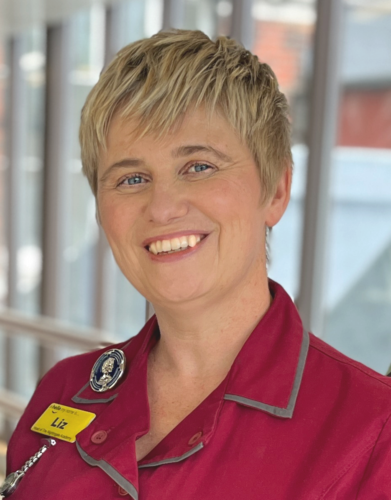
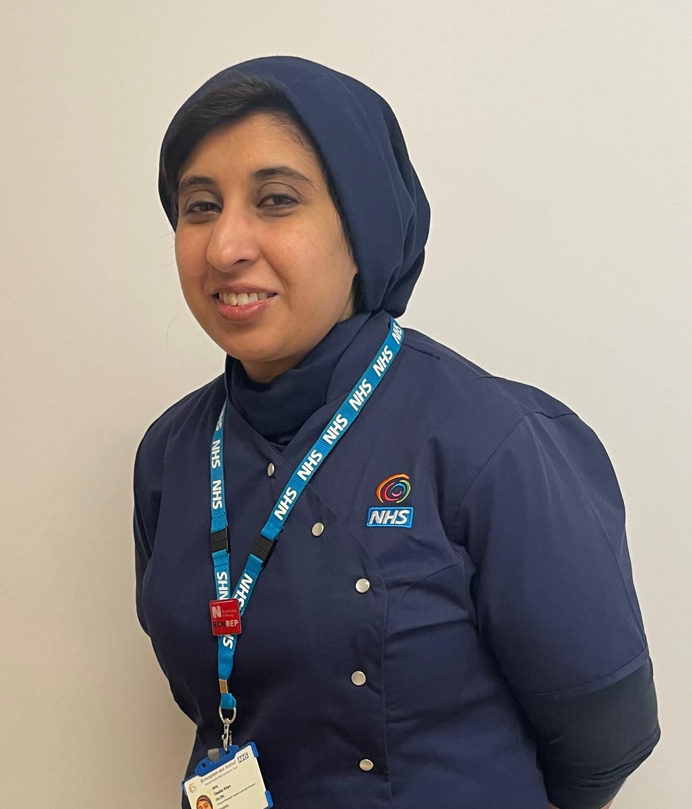
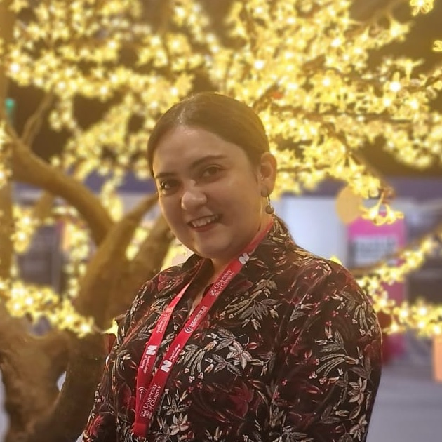
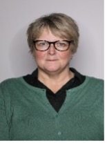

Committee Members
The CNENet Steering Committee provides strategic leadership and oversight for the network. Guided by a Chair and Deputy Chair the Committee ensures that CNENet’s vision, priorities, and activities align with the needs of clinical nurse educators and the broader healthcare community.

Luke White
Chair
Luke began his nursing career in September 2006, training at the University of Leeds and qualifying in 2009. He worked at York & Scarborough Teaching Hospitals NHS Foundation Trust as a Staff Nurse in Acute Medicine and Short Stay care. In 2010, he moved to Leeds Teaching Hospitals Trust (LTHT), gaining experience in Haematology & Bone Marrow Transplantation (BMT), Thoracic, and Oncology. He has presented his work to National and European conferences in BMT.
Since 2015, Luke has held various education roles, including Clinical Educator for Haematology & BMT and Senior Clinical Educator for Oncology, including Senior Project Nurse, leading on key education programs including IPP, Preceptorship, Clinical Skills.
In 2022, he became a Clinical Leadership Fellow in Clinical Education, and in 2023, he was appointed Lead Nurse for Clinical Quality & Education in Specialty & Integrated Medicine CSU at LTHT. Passionate about clinical education, Luke joined the CNE Network UK in 2017 and has been a committee member since 2022 and has been the Chair since January 2025.
Having coached over many years, formalising this in 2025 as a qualified Coach & Mentor, and more recently as a Professional Nurse Advocate in 2026, Luke believes that coaching and supporting individuals and teams with compassion, drives change and confidence and he is committed to building safe and inclusive teams. Outside of work, Luke has been an active Trustee of a Deaf Education through Listening & Talking charity.

Finn Tysoe
Deputy Chair
Finn is an avowed generalist who embraces Robert Heinlein’s maxim that ‘specialisation is for insects’. They are naturally curious and willing to look past assumptions in order to be alongside people. Throughout their life they have supported people through times of crisis and uncertainty.
Currently Finn leads a team of clinical educators to deliver academic and practice-based learning. Finn firmly believes they are the best team. In 2023 the team's work received an NHS England award for pastoral care of Internationally Educated Nurses.
Finn’s key area of interest is supporting nurses and midwives in transition between levels of practice. They contribute to cancer policy, international education programmes and advanced communication skills training. They have taught and continue to learn from nurses in Palestine and Tanzania.


Liz Allibone
Committee Member and Past Chair
Liz Allibone is Head of Nursing at The Nightingale Academy, a centre for professional development at Guys and St Thomas' NHS Foundation Trust. This role forms a core part of the corporate nursing portfolio supporting the organisation’s 9,000 nursing and midwifery staff.
Liz is passionate about raising standards in person-centred care, enhancing learning and teaching in practice, quality improvement, strengthening leadership, and developing staff to achieve their full career potential.
In 2014, Liz co-founded the Clinical Nurse Educator Network. As former Chair, she collaborated with NHS England (NHSE), the Royal College of Nursing (RCN), and the Nursing and Midwifery Council (NMC) to raise the profile of clinical educators. Liz has contributed to the design and development of professional standards, career frameworks, and national guidance for nurse education and clinical nurse educators.

Theiba Khan
Committee Member
Theiba Khan is a Mental Health Nurse and Lead Clinical Educator at Birmingham and Solihull Mental Health Foundation Trust, where she leads a team of clinical educators delivering and facilitating bespoke, essential clinical education within mental health settings to support safe, high-quality patient care and workforce development.
She is a West Midlands Regional Board Member for the Royal College of Nursing (RCN), an RCN-accredited Steward and Representative, and an RCN Change Maker workforce standards champion, advocating for the nursing workforce and influencing professional and organisational change.
In addition, Theiba has worked closely with internationally educated nurses, providing tailored educational and pastoral support to facilitate their successful transition into UK clinical practice. As a Cultural Ambassador, Theiba champions inclusivity, equity, and culturally responsive leadership and education across healthcare settings.
She is an active Committee Member of the Clinical Nurse Educators Network, contributing to strategic leadership, collaboration, and innovation in clinical education practice.

Shikha Sharma
Committee Member
Shikha Sharma is the Lead of Clinical Education for the Non‑Medical Workforce, bringing over 15 years of nursing, leadership, and educational expertise. Her career began in Cardiothoracic Intensive Care, where she developed a strong commitment to safe, high‑quality care and calm, compassionate leadership. A defining chapter of her journey was serving as a Captain (Senior Nurse) in the Indian Army, leading a team of 50 and strengthening her skills in teamwork, discipline, and clear communication.
Shikha later advanced into roles as a Nurse Educator and Quality Improvement Nurse, where she discovered her passion for developing others through coaching, training design, and governance. These experiences shaped her belief that people thrive when they feel supported, valued, and equipped.
In her current role, she leads the educational strategy for the non‑medical clinical workforce, creating learning environments where staff feel confident, empowered, and proud of the care they deliver. She leads with kindness, clarity, and purpose, fostering a culture of continuous, collaborative learning.
Steering Committee
We are in the process of updating our website. Below is a list recognising our current committee members while we compile their bios and photos.
- Liavel Vargas
- Rachel Wright
- Lianne Ford
- Carol McEachran
- Emma McKeever
- Tom Challacombe
Working Groups
We also have volunteers working to support specific activities of the network. These range from producing our newsletter to organising the yearly conference. We're truly grateful to these volunteers who help with the hard work of keeping the network active.
- Danielle Wade de Botero
Past Contributors to the Network
Kat Tolfree
Past Chair 2022-2025
Kat Tolfree was Chair of CNENet from 2022-2025. Kat is a senior nurse, coach, and founder of KLT Consultancy, working at the intersection of nursing, education and positive psychology.
With 20 years’ experience in the NHS, Kat has held local, regional, and national education and workforce development roles. Kat is the former chair of Clinical Nurse Educator Network UK. She currently leads the Education Academy at Frimley Health NHS Foundation Trust.
Alongside her NHS role, Kat supports nurses, educators, and healthcare leaders through coaching, facilitation, and development programmes that focus on confidence, identity, sustainable leadership, and flourishing at work.
Her work is grounded in evidence-based positive psychology, coaching psychology, and real-world experience of navigating change, pressure, and transition in healthcare. Kat is particularly interested in how belonging, strengths, and self-trust help shape people working in complex systems.
Known for her warm, authentic, and reflective style, Kat brings both practical tools and thoughtful challenge to her sessions. She believes that when healthcare professionals are supported to be more themselves at work, everyone benefits, staff, services, and patients alike.

Vanda Carter
Past Deputy Chair 2022-2025
Vanda Carter is a registered nurse, researcher, and educator, currently seconded to Staffordshire University as a Research Programme Manager. With over 35 years in the NHS, primarily in clinical oncology research, she has built her career on evidence‑based practice, patient advocacy, and research excellence.
Over the past six years, Vanda has refocused her work toward academic and health and social care research, beginning her PhD in 2020 and contributing to nurse‑led research development. Her interests include healthcare management, policy, education, safety, quality improvement, and innovation.
She is a Professional Nurse Advocate, a member of the Health Research Authority Research Ethics Committee Expert Panel, and an ambassador for the Academy of Fabulous Stuff and the Dignity Council. Awarded an IHSCM Fellowship in 2023, Vanda is also a published author and former Deputy Chair of the UK Clinical Nurse Educator Network.